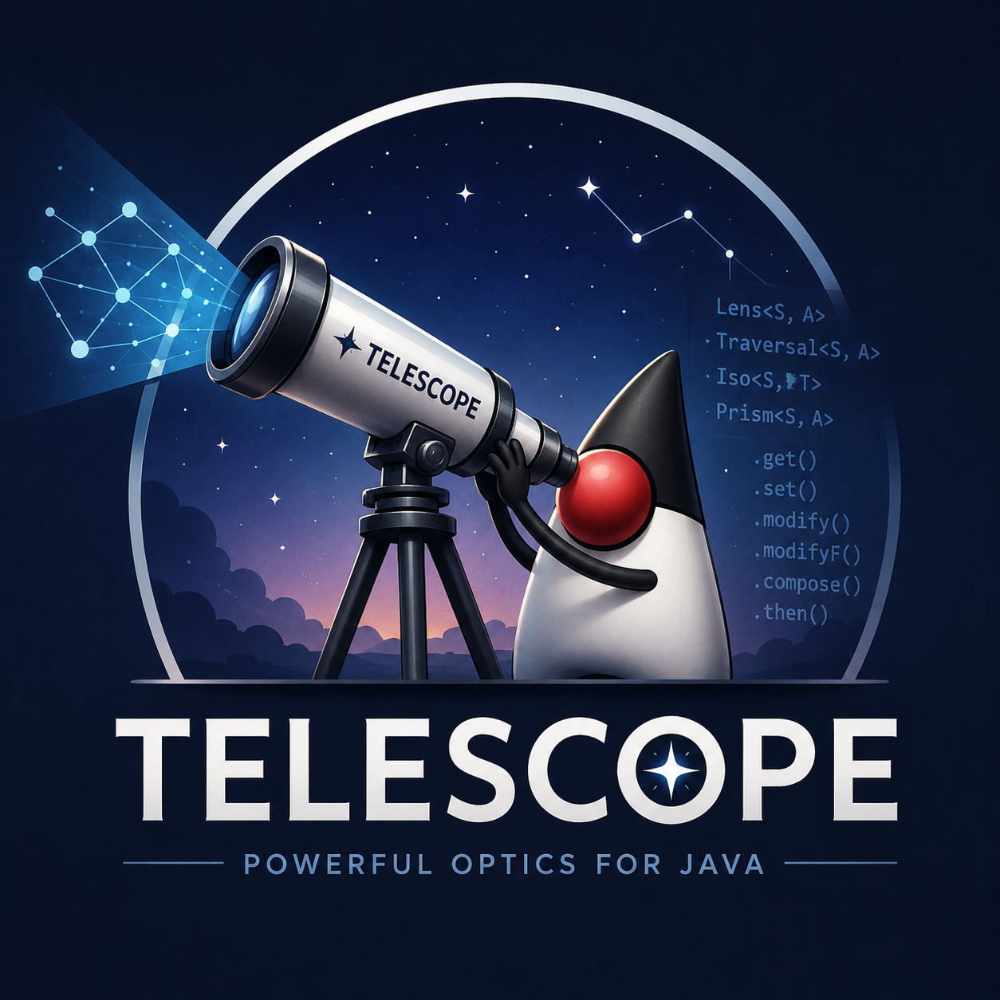

From a Monocle port to one fluent type: how telescope happened
Telescope is a Java 25 deep-copy DSL for records and POJOs. You build a path through an immutable
graph, then read it, write it, update it, traverse it, convert it, or thread an effect through it.
No hand-written copy constructors. No mention of Iso, Lens, Prism, Affine, or Traversal
anywhere in your code. The end-state is one method-ref chain on the runtime DSL, or one fluent
chain on the generated navigator. Both bottom out at the same value:
// Reflective (runtime resolution, ~262 ns/op for a 3-level path)
Telescope.of(Company.class)
.each(Company::departments)
.each(Department::teams)
.each(Team::users)
.field(User::email)
.update(company, String::toLowerCase);
// Compile-time, reflection-free (~45 ns/op — same Telescope, generator-built)
CompanyPath.start()
.departments().each()
.teams().each()
.users().each()
.email().update(company, String::toLowerCase);

It did not start there. The first commits were a small converter registry: function-based,
multi-hop composition, a few dozen lines. Two iterations later it had drifted into a full port of
Scala’s Monocle library, eight category-theory interfaces
(Iso, Lens, Prism, Affine, Traversal, Getter, Setter, Fold) sitting on the public
API, a composition lattice picking the most-specific return type at every .then(...), lens laws
verified in a test suite. Correct, complete, and unusable.
This post is how it got from there to the DSL above, with the codegen story that landed on top. Some of it is also a record of how often I got the shape wrong and had to start over.
The optics itch and the slide into Monocle
The starting problem was concrete. Deep updates to immutable graphs in Java are ergonomically
awful. To change one field five levels down in Company →︎ Department →︎ Team →︎ User →︎ Address, you
write something like 25 lines of nested new Company(company.name(), company.departments().stream() .map(d -> new Department(...))), every constructor enumerated, every untouched field threaded
through by hand. Streams, Optional, and records made this cleaner than the pre-records version
but did not make it short.
My first attempt was a registry of named converters that composed in chains. It worked for the synthetic test cases and then collapsed at the third level of nesting. Composition needed real rules (what happens when you stack a partial-focus optic onto a many-focus one), and I was reinventing those rules badly. So I went to the source.
Optics solve exactly this problem. A Lens<S, A> is two functions, a get: S →︎ A and a
set: S →︎ A →︎ S, plus laws that keep the two consistent (set(s, get(s)) == s, and so on). A
Prism is the same trick for sealed-type cases. A Traversal generalises to many-focus.
Compositions between them form a lattice: stack a Lens and a Prism and you get an Affine,
stack an Affine and a Traversal and you get a Traversal. Decades-old rules, already proven,
already implemented in Haskell lens, Scala Monocle, Arrow Optics, Higher-Kinded-J.
Within two refactors of the converter registry, I had a working version of the lattice. The
test suite hit lens laws, prism partial round-trips, iso reversibility, and the diamond
resolution rule for Iso.then(Lens) returning Lens. The composition table:
| Outer ↘︎ Inner | Lens | Prism | Iso | Affine | Traversal |
|---|---|---|---|---|---|
| Lens | Lens | Affine | Lens | Affine | Traversal |
| Prism | Affine | Prism | Prism | Affine | Traversal |
| Iso | Lens | Prism | Iso | Affine | Traversal |
| Affine | Affine | Affine | Affine | Affine | Traversal |
| Traversal | Trav. | Trav. | Trav. | Trav. | Traversal |
That table is intellectually satisfying. The lattice rules fall out of category theory and the laws fall out of the type signatures. As a piece of academic Java, it was perfectly fine. As an API anyone would actually use, it was unworkable.
Why the academic shape hurt in Java
Monocle lives in Scala, and Scala has three things that make optics elegant:
- Higher-kinded types. A
Traversal[S, A]in Monocle is defined as a function over any applicativeF[_]. That’s howmodifyF(effectful update) drops out of the same definition as plainmodify. In Java,F[_]does not exist. - Implicit type classes. Scala’s
catslibrary makes “thread any applicative through a traversal” a one-line implicit lookup. Java has no implicits; every applicative would have to be passed explicitly. - Macros. Monocle’s
@Lensesannotation generates per-field lens constants at compile time from a single annotation. Without macros, the choice is between writing the constants by hand or bolting on an annotation processor and a multi-module build.
Java has none of those, so the port surfaced every piece of the inheritance. Users had to import
Lens, Prism, Iso, and Affine, and know which composition produced which. They had to
remember that Iso.then(Lens) = Lens but Lens.then(Prism) = Affine. They had to think in
category-theoretic vocabulary to navigate a record.
That might fly in a Haskell library where the whole community has already opted in to the vocabulary. It does not fly in Java. No team is going to learn five interfaces and a composition lattice just to update a nested field, and I would not blame them.
So I tried to throw the lattice away.
The detour that taught me what not to do
The next iteration replaced the eight interfaces with a single Path<S, A> class. Path had a
Function<S, Stream<A>> reader inside it, a hand-rolled Updater<S, A> for writes, and the
composition rules re-implemented from scratch as Path methods. The API surface collapsed to one
type. The lattice was gone.
This felt great for about two days.
Then I started adding the edge cases back. Iso reversibility, gone. Prism partial round-trip,
gone. The diamond resolution that made Iso.then(Lens) return Lens instead of widening to
Affine, gone. The lens laws were no longer verified by composition; they were now my problem to
enforce by hand inside Path’s update logic. The Path internals grew until they were a worse
version of the lattice I had just deleted.
The lattice, it turned out, was earning its keep. The fact that users did not want to see it did not mean the implementation did not need it. What needed to go away was the exposure of the lattice, not the lattice itself.
I reverted the deletion. The lattice came back into org.telescope.internal.optics,
package-private, where the compiler can enforce that nothing in user code ever names it. The
public surface became one class:
public final class Telescope<S, A>Telescope wraps a Traversal<S, A> from the internal lattice. Every navigation method (field,
each, as, filter) builds the appropriate optic and composes it via the lattice’s rules.
Every read/write operation (read, update, toList, set, …) delegates down. Users never
type Lens, Prism, Iso, Affine, Traversal, Getter, Setter, or Fold and have no
reason to learn what those words mean.
Two layers: proven concepts internally, convenient DSL externally. That is the shape that has stuck through everything that came after.
What the DSL looks like
The 30-second pitch is one path against a domain:
record Address(String city, String zip) {}
record User(String name, int age, String email, Address address) {}
record Team(String name, List<User> users) {}
record Department(String name, List<Team> teams) {}
record Company(String name, List<Department> departments) {}
final Telescope<Company, String> emails =
Telescope.of(Company.class)
.each(Company::departments)
.each(Department::teams)
.each(Team::users)
.field(User::email);
final Company lowered = emails.update(company, String::toLowerCase);
final List<String> all = emails.toList(company);
final long count = emails.count(company);One path, built once, used many ways. The vanilla equivalent is about 25 lines of nested
new Company(company.name(), company.departments().stream().map(d -> new Department(...))), every
constructor enumerated by hand, every untouched field threaded through.
Everything past that landed on the same substrate without changing it: sealed-type narrowing with
.as(...), Optional traversal with .whenPresent(...), indexed traversals, type conversion
between records via from / to / using and map / to / field / build, and the four effectful
update methods (updateAsync, updateOptional, updateEither, updateValidated). The
Kind<F, A> machinery that makes the four effects work lives in internal.optics and never
appears in user code.
Then codegen happened, twice
The reflective DSL above resolves field names at runtime through
SerializedLambda.getImplMethodName() and RecordComponent.getAccessor().invoke(). It works, it
is sub-microsecond, and it is still reflection with all the costs that implies.
The first codegen pass shipped @Focus for records and @BeanFocus for POJOs. Annotate a type
and get a sibling class with per-field lens constants built from direct method-ref + canonical
constructor calls. No runtime reflection, no SerializedLambda decode, ~45 ns/op for a 3-level
field path. Container components got generated traversal constants alongside the field lenses, so
a List<User> users component on Team produced TeamFocus.eachUsers : Telescope<Team, User>,
and a fully compile-checked deep path looked like this:
CompanyFocus.eachDepartments
.then(DepartmentFocus.eachTeams)
.then(TeamFocus.eachUsers)
.then(UserFocus.email);Type-checked at compile time, reflection-free at runtime. It also did not read like the reflective DSL it was supposed to be the fast path for. The reflective version reads:
Telescope.of(Company.class)
.each(Company::departments)
.each(Department::teams)
.each(Team::users)
.field(User::email);The information content is the same, the reading flow is not. So the next pass replaced the
public lens constants with a fluent typed Path navigator:
CompanyPath.start()
.departments().each()
.teams().each()
.users().each()
.email().update(company, String::toLowerCase);Per annotated type, @Focus now emits one parameterised navigator class (<X>Path<R>) plus one
container step per collection component (<X><Cap>Step<R>). Scalar components yield a terminal
Telescope<R, T>. Sub-record components yield a <Sub>Path<R> so navigation can keep going.
Container components (List / Set / Iterable, Map values, Optional) yield a step whose
.each() / .eachValue() / .whenPresent() returns the element’s Path when the element type
is itself annotated, or a terminal Telescope when it is not. The method bodies all build
Telescope.lens(getter, setter) directly, with no reflection at any hop.
Every Path and Step also forwards the full Telescope operation surface (read, find,
toList, count, exists, set, update, updateIndexed, and the four effect variants), so
you do not have to terminate with .get() to operate at any hop:
CompanyPath.start()
.teams()
.each()
.users()
.each()
.updateAsync(company, svc::lookupAsync, pool); // CompletableFuture<Company>The @Bridge annotation generates a bidirectional Iso between any two top-level types
(record↔︎record, record↔︎POJO, POJO↔︎POJO). When a type carries both @Focus and @Bridge, the
navigator gains an as<Target>() method that chains the bridge constant in:
@Focus
@Bridge(UserDto.class)
record UserEntity(String id, String email) {}
@Focus
record UserDto(String id, String email) {}
UserEntityPath.start().asUserDto().email().update(entity, String::toLowerCase);The Iso round-trips, so the result is a new UserEntity. The navigator is now one
compile-checked, reflection-free surface that covers navigation, container traversal, sync ops,
all four effects, and conversion. Cross-paradigm bridges (record↔︎POJO via @Bridge) work the
same way.
Benchmarks
JMH, 3 warmup + 5 measurement iterations, JDK 25, Apple Silicon. Numbers shift between runs; the ratios are the part to read.
| Benchmark | ns/op | ±error | vs hand-copy |
|---|---|---|---|
bridgeForwardRead |
14.9 | ±0.2 | codegen conversion |
handRolledBeanCopyUpdate |
22.2 | ±0.6 | 1.0× (bean baseline) |
handRolledCopyUpdate |
26.4 | ±1.9 | record baseline |
lensConstantUpdate |
45.2 | ±3.4 | 1.7× |
fromBeanForwardRead |
114.0 | ±1.7 | 5.1× |
mapperForwardRead |
135.4 | ±90.1 | record→︎record (noisy) |
mapBeanForwardRead |
142.5 | ±3.7 | 6.4× |
reflectionFieldUpdate |
261.6 | ±15.9 | 11.8× |
ofBeanFieldUpdate |
488.1 | ±139.7 | 22.0× |
A few things to read out of that:
@Bridgecodegen at ~15 ns/op vs runtimemapBeanat ~142 ns/op is ~9.5× on the same POJO↔︎POJO conversion. That is the closest apples-to-apples comparison in the suite.- Codegen field navigation at ~45 ns vs reflective at ~262 ns is ~5.8× on a 3-level deep field
path. That is what
@Focus→︎*Pathbuys. - Runtime reflective conversions (
fromBean,mapper,mapBean) cluster in the 114–142 ns range. Sub-microsecond, fine for ordinary use, not the path I would pick inside a tight loop. - Native POJO navigation (
ofBean) at ~488 ns is ~22× a hand-rolled bean copy. It rebuilds the whole POJO at every level and re-reads every getter to carry siblings over. For a hot loop, bridge once to a record withfromBeanor use@BeanFocuscodegen.
The codegen surface closes the 5–10× gap with hand-written code while keeping the same end-value the reflective DSL produces. You pick a surface (reflective for ergonomics and zero codegen, navigator for compile-time guarantees and the perf number) and you do not pay for the one you did not pick.
What still surprises me
A few things that have not stopped feeling notable after spending real time inside this codebase.
The lattice was right. The detour where I tried to delete it cost more lines than it saved, and
the “trust the proven implementation” lesson keeps coming back around. Having the lattice do the
work internally is why the DSL has not needed to expand its public surface to absorb effectful
update, codegen, or bridge hops. Each one landed as a handful of methods on Telescope plus
helpers in internal.optics, never a restructuring.
Codegen turned out to be a behaviour multiplier more than a perf trick. The first version of
@Focus was sold internally as “make .field(...) faster.” The actual win was different: the
navigator makes paths type-checked at javac. A typo in Company.teams is now a compile error
instead of a runtime exception. The ~5.8× speedup is almost a side effect.
Bridge hops are probably the most underrated feature. A record’s navigator can convert into its
DTO navigator in one fluent step, reflection-free, and the Iso round-trip handles the reverse for
free. I have not seen that in another Java lens library. It fell out of having @Bridge already
shipped: the codegen pattern is “if the source has both annotations, emit one extra method on the
Path.” Two days of work for what genuinely feels like a step-change in ergonomics.
And the reflective DSL stayed honest. I expected it to feel obsolete once codegen landed, and it has not. Anyone who wants to use telescope without wiring up an annotation processor still has the full DSL, sub-microsecond, with build-time fail-fast validation that catches bad method refs at path construction. Codegen is the opt-in that pays back in tight loops; the reflective path is the default that just works.
Five rewrites in, the library is a single public type, a fluent generated navigator, four effect
variants, three styles of type conversion, and a benchmark suite that puts numbers on the
tradeoffs. Looking back, none of the rewrites felt obvious in advance. The one that mattered was
admitting the academic library was the wrong public surface and pushing it under the floorboards
twice: first behind Telescope, then behind the generated *Path navigators.
The category theory is still doing the work. You just do not have to know the vocabulary to use it.